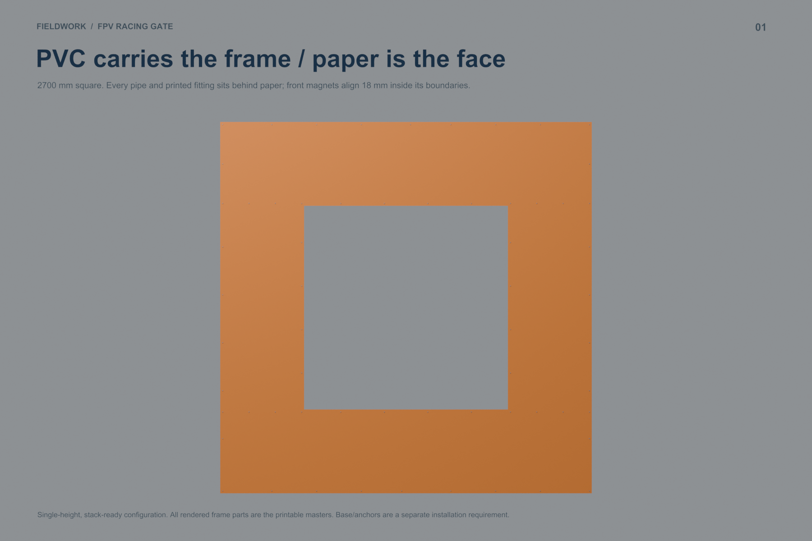
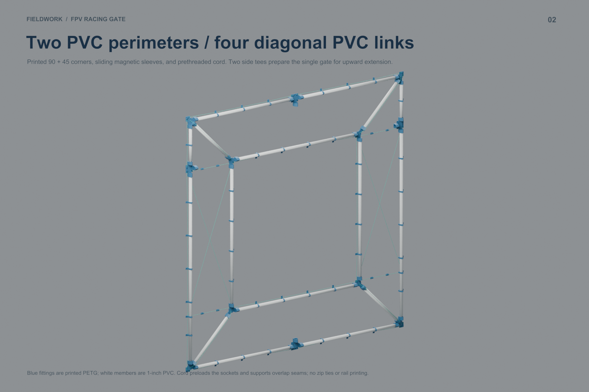
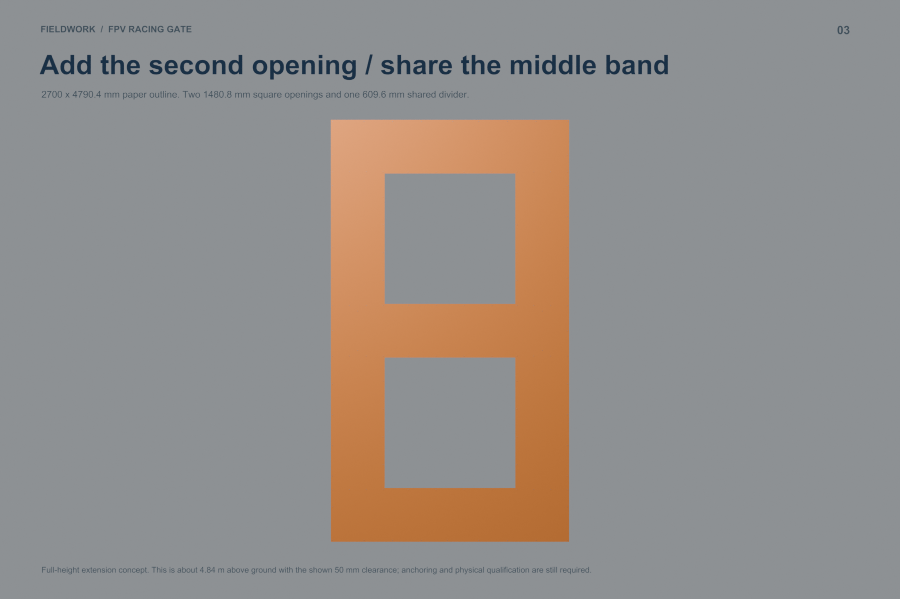
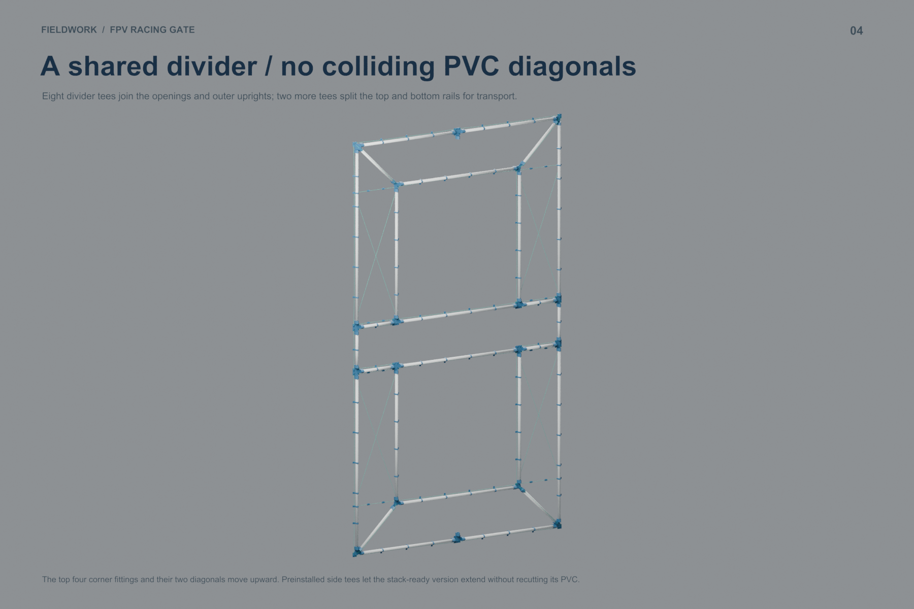
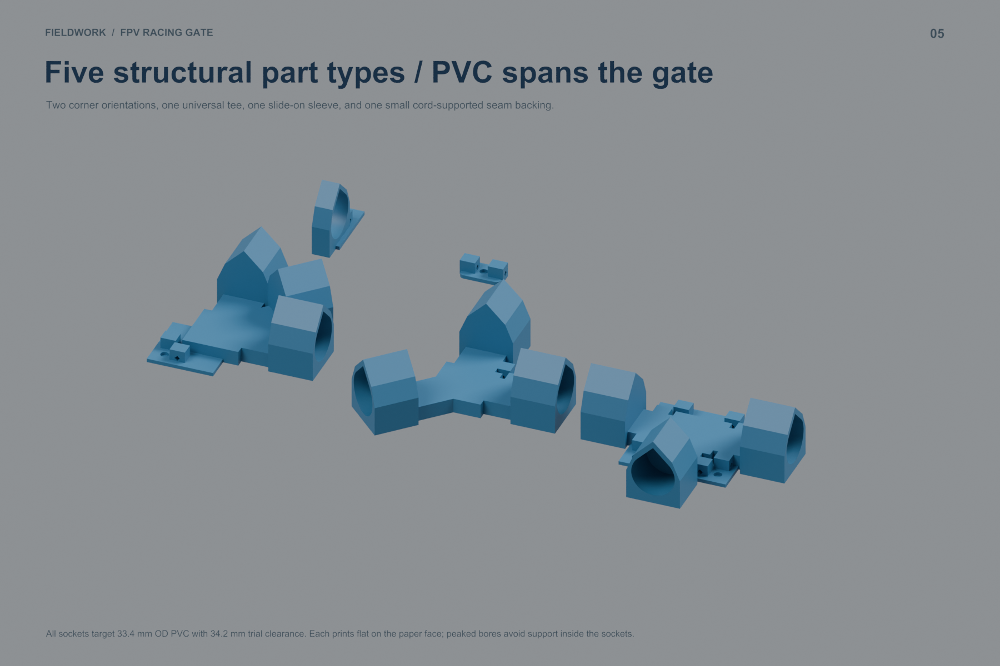
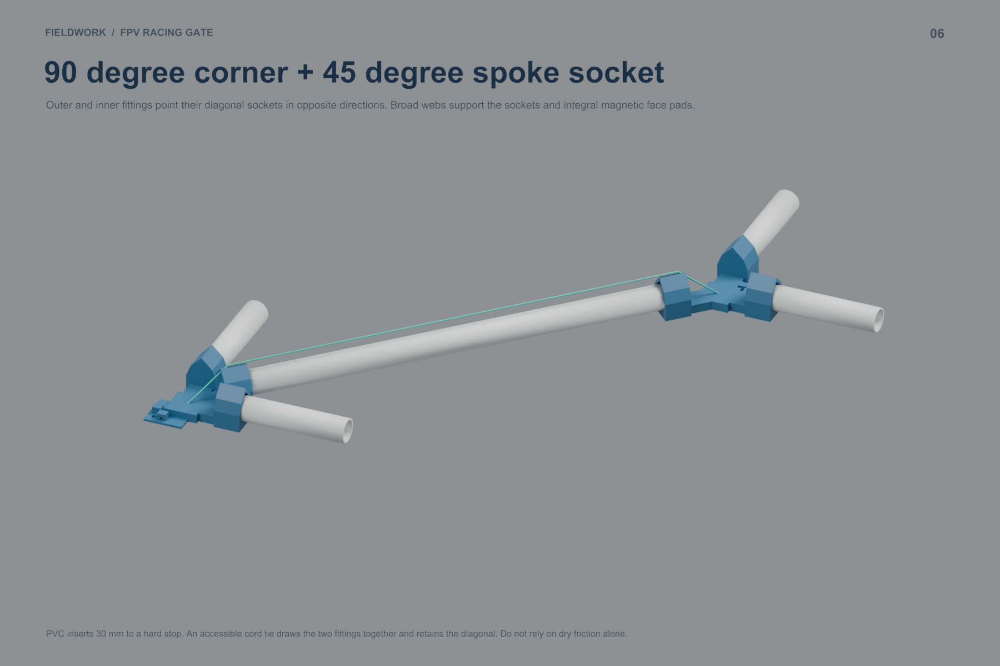
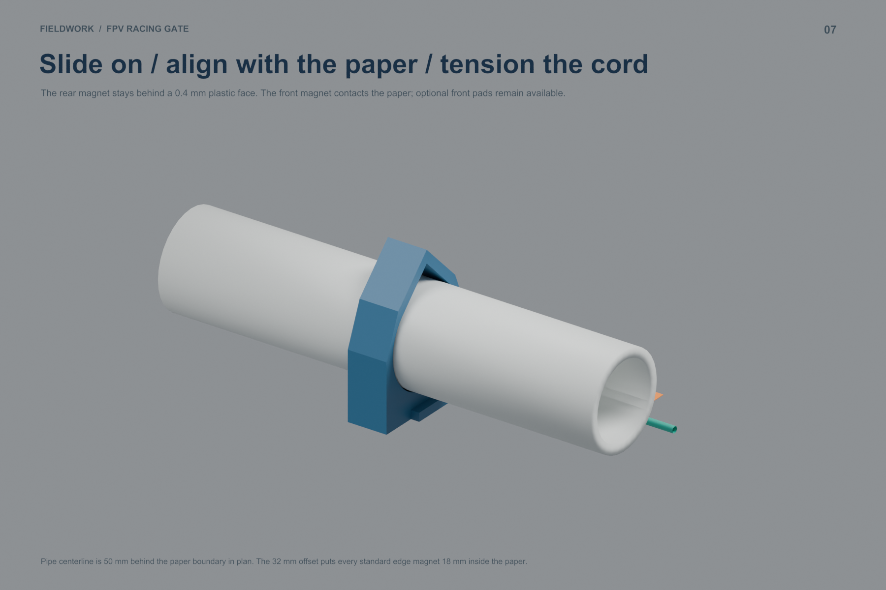
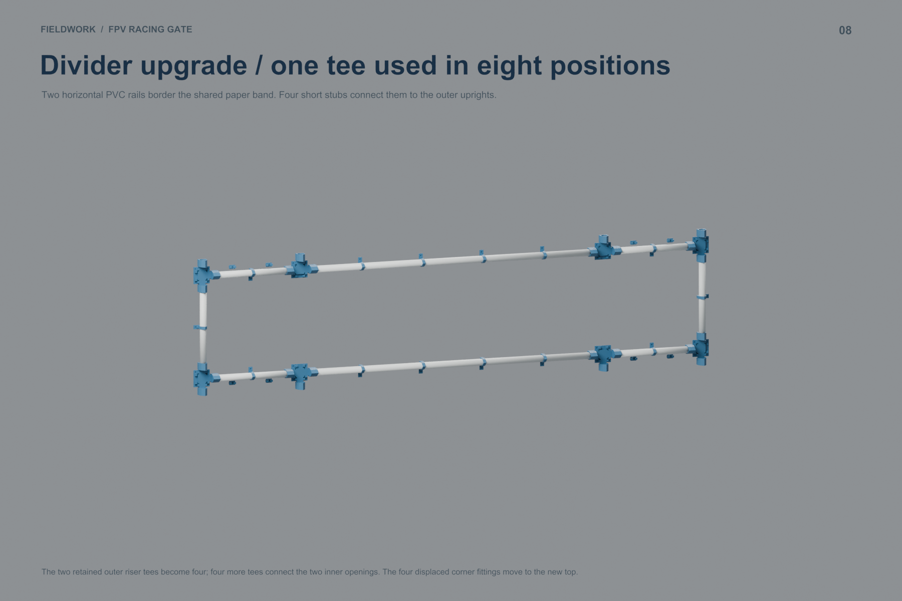
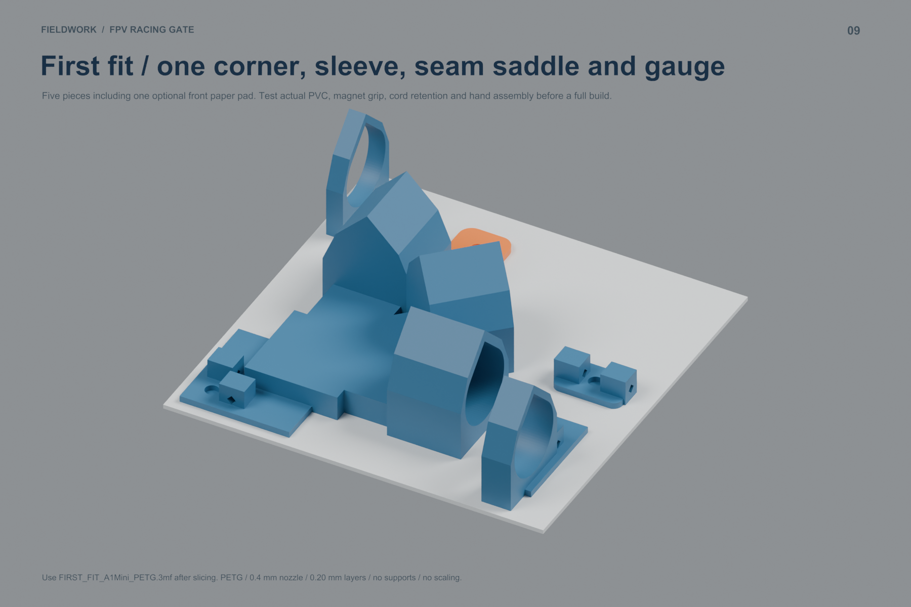

One outer PVC perimeter and a PVC ring around each opening. Paper conceals the pipes and fittings from the front; magnets sit 18 mm inside the edges. The shared divider enables a 2700 × 4790.4 mm two-level obstacle.
Open Blender · Design and assembly PDF · Full guide · Download kit
| Configuration | Pieces | PETG kg | Print h | $6 PVC sticks | Subtotal* |
|---|---|---|---|---|---|
| Basic single, long pipes | 64 | 1.370 | 56.6 | 7 | $69.40 |
| Recommended single | 62 | 1.759 | 71.0 | 6 | $71.17 |
| Two-level Split-S | 108 | 2.814 | 114.5 | 10 | $116.27 |
*PVC + PETG at $20/kg. Face skeleton only; add magnets, cord, paper, adhesive, base, guys and anchoring. Actual local A1 Mini slicing estimates. Five production part types for the recommended single and double.









Parts · Print queue · PVC cuts · Stock nesting · Sleeve positions · Magnet positions · Paper cuts · Cord cuts · Face map
Parts · Print queue · PVC cuts · Stock nesting · Sleeve positions · Magnet positions · Paper cuts · Cord cuts · Face map
Parts · Print queue · PVC cuts · Stock nesting · Sleeve positions · Magnet positions · Paper cuts · Cord cuts · Face map
Comparison · Upgrade parts · Upgrade PVC · Digital checks
All supplied plates fit with at least 5 mm bed clearance and slice without supports or warnings. Front pads are optional; the frame-side plastic skins and peaked sleeve roofs remain. Physical load testing and a qualified base/anchoring design remain outstanding, particularly at the 4.79 m stacked height. No printer job was submitted.
{kind=link}
{kind=link}
{kind=link}